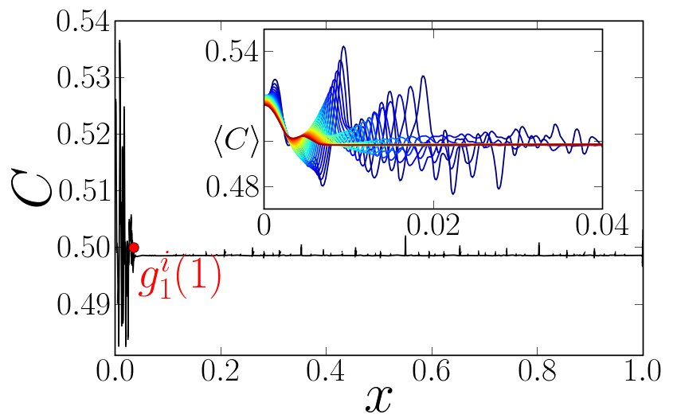
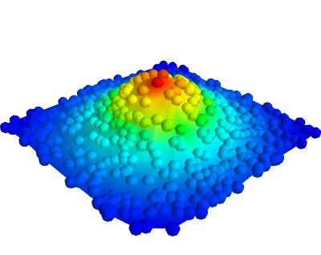

1.1. 科学计算工具和流程¶
作者: Fernando Perez, Emmanuelle Gouillart, Gaël Varoquaux, Valentin Haenel
译者： 雷杰
1.1.1. 为什么选择Python?¶
1.1.1.1. 它能满足科学家们的需求¶
- 获取数据 (模拟，控制实验),
- 操作、处理数据,
- 结果的可视化 (便于理解我们所做的事!),
- 将结果用于交流: 助力报告，演讲以及发表.
1.1.1.2. 说明¶
- 拥有丰富的基础工具包: 我们不用再为绘制图形，傅里叶变换，或者是曲线拟合重新编程！ 为您节省重复造轮子的时间。
- 简单易学: 尽管计算机科学不是我们的工作或者专业，我们仍有信心在数分钟之内用Python 完成图形绘制，信号平滑等等工作。
- 可读性高，方便与同行交流代码: Python代码如丝般顺滑，你值得拥有. 拥有一定数学基础 和编程经验的读者可以很轻松地读懂一段Python代码。
- 代码高效，执行快... 我们不想花很多的时间来写程序，同时，我们也不愿意在代码运行时 等待很长世间，所以，我们选择了Python。
- 解决你碰到的所有问题, 一个简单易用的环境/语言，能够帮助解决我们所遇到的几乎所 有问题。从网站建设到机器学习，从信号处理到游戏开发，你所想到的，Python都能 帮你实现。
1.1.1.3. 现有的解决方案¶
科学家们用什么?
编译语言: C, C++, Fortran等.
- 优点:
- 快. 经过良好优化的编译器. 在大型计算表现很好.
- 拥有一些高度优化的科学计算库. 比如: BLAS (向量/矩阵 计算)
- 缺点:
- 编程复杂: 没有交互式的开发环境, 强制的编译步骤, 冗杂的公式 (&, ::, }}, 等.), 需要人为进行内存管理 (在C中尤其困难). 对于非计算机专业的人来说，这些语言都很难
脚本语言: Matlab
- 优点:
- 拥有适用于多个不同领域的丰富工具库. 由于这些库通常由编译语言编写，其运行速度也很快.
- 良好的编程环境: 全面，详尽的帮助文档, 一体化的编辑器等
- 含商业支持.
- 缺点:
- 基本的指令少，对于高级用户来说可能会成为限制.
- 需付费使用.
其他脚本语言: Scilab, Octave, Igor, R, IDL等.
- 优点:
- 开源, 免费, 或者收取的一部分费用.
- 某些特性可能十分好用 (R中的统计, Igor绘图等.)
- 缺点:
- 相比于Matlab，其所提供的算法要少一些， 同时，这些语言也不是那么高级。
- 一些软件仅适用于特定领域. 比如: Gnuplot或者xmgrace ，用途仅限于绘制曲线.
那么Python怎么样呢?
- 优点:
- 丰富的科学计算包 (尽管比Matlab少一点)
- 一门蕴含思想的语言, 能够编写出具有高可读性和良好结构的代码: we “code what we think”.
- 对于除了科学计算外，也有很多支持其他工作的库 (服务器管理, 串行端口接入等等.)
- 免费，开源，使用广泛，有一个活跃的用户社区。
- 缺点:
- 相对于Matlab等语言，开发环境不太友好。(但是很讨极客们喜欢).
- 缺乏很多专业软件或者工具箱里提供的算法.
1.1.2. Python科学计算基石¶
不像Matlab, Scilab或者R, Python并没有提供预先打包好的科学计算模块集合. 下面是一些基础的用于搭建Python科学计算环境的模块:
Python, 通用的现代计算语言
- Python : 数据类型 (
string,int), 流程控制, 数据集合 (lists, dictionaries) 等. - 标准库模块.
- 很大数量的由Python编写的专业模块或者应用: 网络协议, 网站框架等... 外加科学计算.
- 开发工具 (自动测试, 文档生成)

- Python : 数据类型 (
IPython, 高级 Python shell http://ipython.org/
- Numpy : 提供强大的 numerical arrays 对象, 和一系列对其进行操作的方法.
Scipy : 高级数据处理程序。 提供最优化,回归，插值算法等。 http://www.scipy.org/
Matplotlib : 2-D绘图, 可用于发表的图形输出。 http://matplotlib.org/
Mayavi : 3-D绘图 http://code.enthought.com/projects/mayavi/
{kind=link}
{kind=link}
1.1.3. 交互式工具流程: IPython + 一款文本编辑器¶
交互式的工作方式，便于测试和理解算法: 这一节将会介绍使用 IPython 来进行开发和理解算法的流程.
Python是一种通用型的语言。正如此，它有多种多样的开发环境和开发方式. 尽管这会让初学者们感到很困惑，但这却让Python能够在浏览器以及嵌入式设备中编写。
这一节的参考文档:
IPython用户手册: http://ipython.org/ipython-doc/dev/index.html
1.1.3.1. 命令行交互¶
启动 ipython:
In [1]: print('Hello world')
Hello world
使用 ? 获取帮助:
In [2]: print?
Type: builtin_function_or_method
Base Class: <type 'builtin_function_or_method'>
String Form: <built-in function print>
Namespace: Python builtin
Docstring:
print(value, ..., sep=' ', end='\n', file=sys.stdout)
Prints the values to a stream, or to sys.stdout by default.
Optional keyword arguments:
file: a file-like object (stream); defaults to the current sys.stdout.
sep: string inserted between values, default a space.
end: string appended after the last value, default a newline.
1.1.3.2. Elaboration of the algorithm in an editor¶
在文本编辑器里创建 my_file.py 文档. 在EPD (Enthought Python Distribution)中, 你可以使用 Scite, 在开始菜单中提供. 在Python(x,y), 可以使用Spyder. 在Ubuntu下, 如果你还没有自己钟爱的编辑器, 我们推荐安装 Stani’s Python editor. 在 my_file.py 中添加:
s = 'Hello world'
print(s)
现在，你可以在IPython中运行这个程序，并查看结果变量:
In [1]: %run my_file.py
Hello world
In [2]: s
Out[2]: 'Hello world'
In [3]: %whos
Variable Type Data/Info
----------------------------
s str Hello world
从脚本到函数
尽管使用这些脚本(包含一系列指令集合的文件)很方便, 把它们升级为 一些函数是更好的做法:
- 脚本不能被再利用，函数善于此道.
- 函数式的编程能将算法分解为一个个的小模块，有助理解.
1.1.3.3. IPython小技巧¶
IPython用户手册包含丰富的关于使用IPython信息,为了便于你踏出第一步，我们给出了一个 IPython四项特性的简介: history, magic functions, aliases and tab completion. (历史记录， 魔法命令， 别名， Tab代码补全)
和UNIX shell一样, IPython 支持命令历史功能. 输入 up 和 down 来转到之前输入过的指令:
In [1]: x = 10
In [2]: <UP>
In [2]: x = 10
IPython 支持通过在命令前添加 % 字符使用 magic 函数. 前述 run 和 whos 就是magic函数. 注意, 默认启启用的 automagic 设置,允许你省略 % 符号。因此，你可以直接使用magic函数。
其他有用的magic函数:
%cd改变当前目录.In [2]: cd /tmp /tmp
%timeit允许使用标准函数库中的timeit来记录一段代码的运行时间:In [3]: timeit x = 10 10000000 loops, best of 3: 39 ns per loop
%cpaste允许使用粘贴的代码，特别是来自网页上的带有Python提示符(e.g.>>>)
或者IPython提示符的代码(e.g. in [3]):
In [5]: cpaste Pasting code; enter '--' alone on the line to stop or use Ctrl-D. :In [3]: timeit x = 10 :-- 10000000 loops, best of 3: 85.9 ns per loop In [6]: cpaste Pasting code; enter '--' alone on the line to stop or use Ctrl-D. :>>> timeit x = 10 :-- 10000000 loops, best of 3: 86 ns per loop
%debug允许进行运行中的调试. 也就是说，如果你的代码在运行过程中抛出异常,
键入 %debug 命令会使调试器进入异常抛出点的状态.
In [7]: x === 10 File "<ipython-input-6-12fd421b5f28>", line 1 x === 10 ^ SyntaxError: invalid syntax In [8]: debug > /.../IPython/core/compilerop.py (87)ast_parse() 86 and are passed to the built-in compile function.""" ---> 87 return compile(source, filename, symbol, self.flags | PyCF_ONLY_AST, 1) 88 ipdb>locals() {'source': u'x === 10\n', 'symbol': 'exec', 'self': <IPython.core.compilerop.CachingCompiler instance at 0x2ad8ef0>, 'filename': '<ipython-input-6-12fd421b5f28>'}
IPython帮助
- IPython内置的速查表可通过
%quickref获取。 - 查看所有的magic functions，键入
%magic.
IPython有许多的类似UNIX的 aliases (别名，命令)，如列出当前文件夹所有文件的 ls 命令, 复制文件的 cp 命令以及
删除文件的 rm 命令. 所有的命令可通过键入 alias 速查:
In [1]: alias
Total number of aliases: 16
Out[1]:
[('cat', 'cat'),
('clear', 'clear'),
('cp', 'cp -i'),
('ldir', 'ls -F -o --color %l | grep /$'),
('less', 'less'),
('lf', 'ls -F -o --color %l | grep ^-'),
('lk', 'ls -F -o --color %l | grep ^l'),
('ll', 'ls -F -o --color'),
('ls', 'ls -F --color'),
('lx', 'ls -F -o --color %l | grep ^-..x'),
('man', 'man'),
('mkdir', 'mkdir'),
('more', 'more'),
('mv', 'mv -i'),
('rm', 'rm -i'),
('rmdir', 'rmdir')]
最后，我们有必要提及 tab completion (即使用Tab键进行代码补全) 特性, 如IPython手册所讲:
Tab completion, especially for attributes, is a convenient way to explore the structure of any object you’re dealing with. Simply type object_name.<TAB> to view the object’s attributes. Besides Python objects and keywords, tab completion also works on file and directory names.
In [1]: x = 10
In [2]: x.<TAB>
x.bit_length x.conjugate x.denominator x.imag x.numerator
x.real
In [3]: x.real.
x.real.bit_length x.real.denominator x.real.numerator
x.real.conjugate x.real.imag x.real.real
In [4]: x.real.